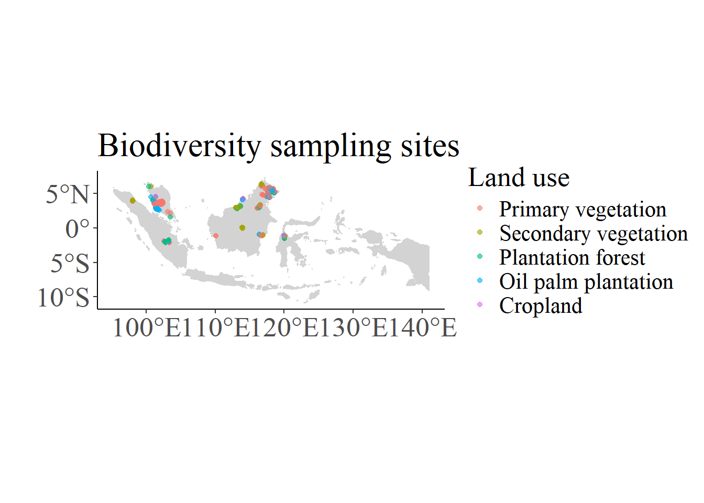
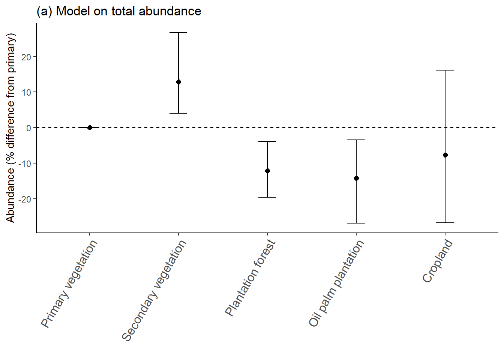
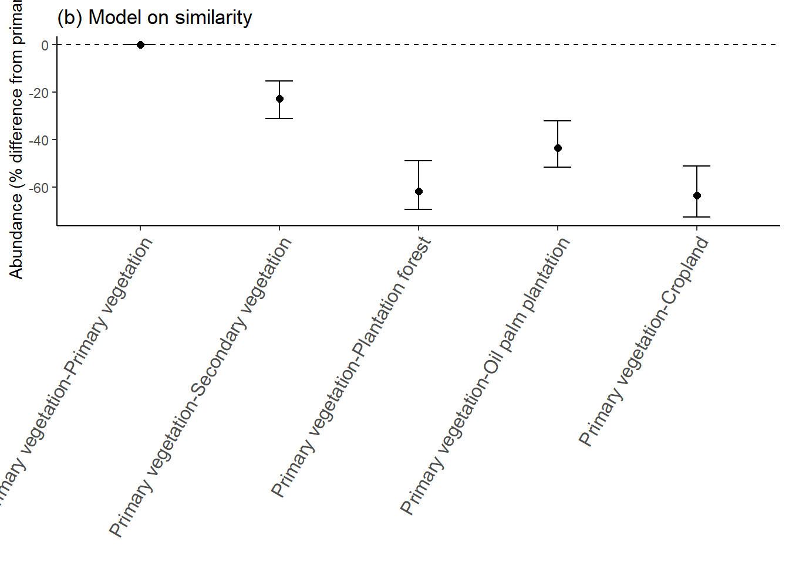
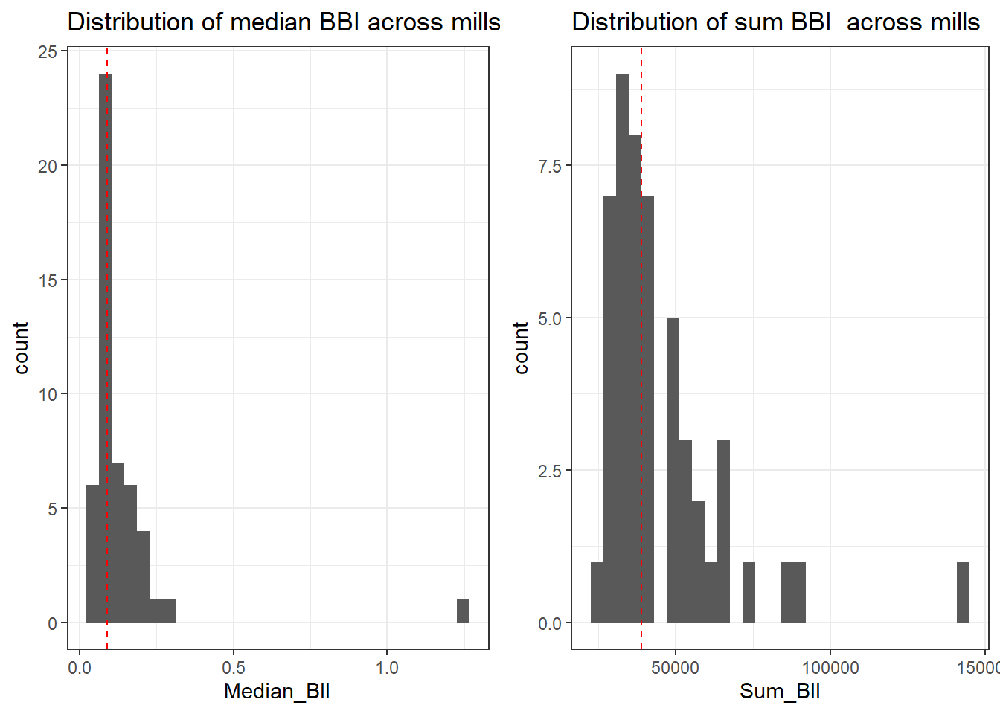
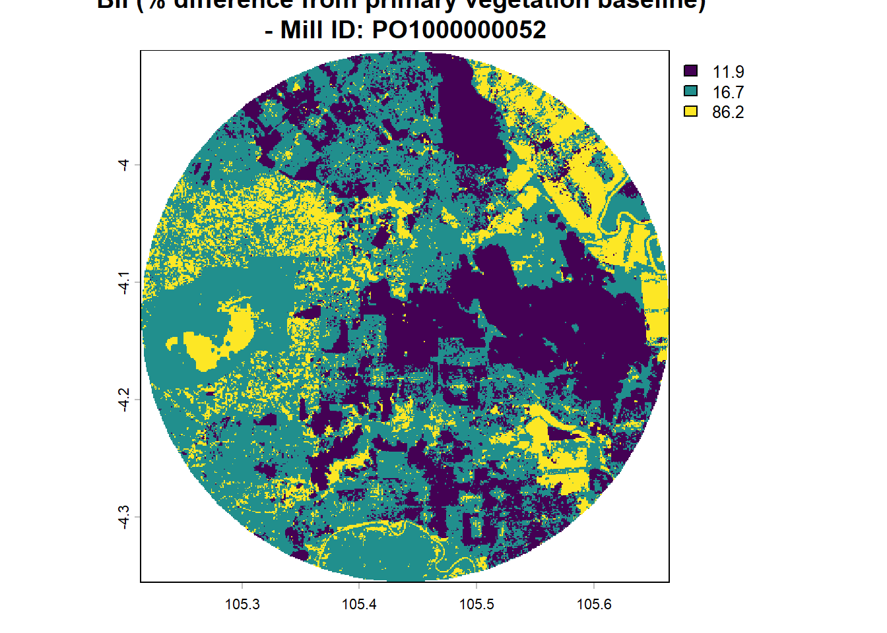

TimeStart <- Sys.time()Pilot 2: Exploring biodiversity impacts of oil-palm plantations in Indonesia and Malaysia
Aims
This work is part of the Pilot 2 (Agrifood Supply Chains) of the LEON project (Leveraging Earth Observation for Nature Finance), funded by ESA (project website here).
The aims of this work are to:
1: Derive different biodiversity indices (average abundance, similarity, and the Biodiversity Intactness Index - BII) for oil-palm plantations focusing on Pilot 2’s focal area, Indonesia and Malaysia.
2: Explore the role and ability of Earth Observation data in explaining and predicting biodiversity change in the pilot region.
3: Derive BII for the mill areas of interest, as a useful indicator for financial institutions.
The approach is based on the PREDICTS database Hudson et al. 2014, which is a collection of independent studies that have sampled biodiversity in-situ, in different land-use types. PREDICTS notably underpins the global calculations of the BII. In PREDICTS-based approaches, biodiversity change is inferred from a space-for-time substitution, by comparing assumed pristine locations (sites sampled in minimally-used primary vegetation) to disturbed sites (e.g. located in cropland, secondary vegetation, or plantations).
Here, we specifically investigates whether we can improve BII predictions by considering EO-derived data in the biodiversity models that underpin BII (using EO-derived data as explanatory variables for biodivrsity change). In particular, we consider the following EO-derived datasets:
- Oil-palm plantation age. We investigate wheter plantation age influences the biodiversity indicators (abundance). For plantations at a global scale, Tudge et al. (2023) found a significant effect for species richness. Note that Tudge et al. (2023) did not detect any effect of age on abundance in oil palm plantations.
Here, plantation age is derived from Danylo et al. (2021), who produced a map of the extent and age of detection of oil palm plantations encompassing Malaysia and Indonesia.
This document thus presents the step-by-step analyses (including loading data, code, and deriving outputs) for investigating the biodiversity impacts of oil-palm plantations in Indonesia and Malaysia using the PREDICTS database.
Acknowledgements: Adriana de Palma wrote a tutorial for deriving BII using the PREDICTS database, which was a useful source in developping this work. Tim Newbold wrote useful packages for data preparation and model fitting that we employed in this work.
1. DATA PREPARATION
Load the necessary packages; load and prepare the PREDICTS data and otherwise EO-derived layers that we employ. The PREDICTS data can be downloaded from here.
1.1. Load packages and useful functions
Packages <- c(
'dplyr',
'ggplot2',
'rnaturalearth',
'StatisticalModels',
'ggpubr',
'purrr',
'betapart',
'vegan',
'terra',
'sp'
)
sapply(Packages, FUN=library, character.only=TRUE)
rm(Packages)
source('Source_Functions.R')1.2. Load the land-cover layers for the pilot region (for projections)
In the work conducted for Pilot 2, Rui Song prepared land cover maps for our study region, with corrections for the detection of oil-palm plantations. We use these maps to predict BII around mills.
However, we need to get some information on the state of forests. Indeed, tree cover alone is not enough as it does not reflect possible forest degradation. To this end, we overlay a dataset on forest integrity (the Forest Landscape Integirty Index; https://www.forestintegrity.com/home)
Indonesia_Malaysia_Map <- vect(rnaturalearth::ne_countries(scale = "medium",
returnclass = "sf",
country = c("Malaysia", "Indonesia")))
## prepare land cover layer (year 2020) and crop for the region
if(!file.exists("../../data/supply_shed_data/worldcover_2020_cropped.tif")) {
World_Cover_2020 <-
rast("../../data/supply_shed_data/worldcover_2020_idn_mys_bias_oilpalm_cog.tif")
World_Cover_2020_crop <-
crop(World_Cover_2020, Indonesia_Malaysia_Map)
writeRaster(World_Cover_2020_crop,
'../../data/supply_shed_data/worldcover_2020_cropped.tif')
rm(World_Cover_2020)
} else{
World_Cover_2020_crop <-
rast('../../data/supply_shed_data/worldcover_2020_cropped.tif')
}
## prepare land cover layer (year 2021) and crop for the region
if(!file.exists("../../data/supply_shed_data/worldcover_2021_cropped.tif")) {
World_Cover_2021 <-
rast("../../data/supply_shed_data/worldcover_2021_idn_mys_bias_oilpalm_cog.tif")
World_Cover_2021_crop <-
crop(World_Cover_2021, Indonesia_Malaysia_Map)
writeRaster(World_Cover_2021_crop,
'../../data/supply_shed_data/worldcover_2021_cropped.tif')
rm(World_Cover_2021)
} else{
World_Cover_2021_crop <-
rast('../../data/supply_shed_data/worldcover_2021_cropped.tif')
}
## to examine the land cover categories:
## see https://developers.google.com/earth-engine/datasets/catalog/ESA_WorldCover_v200#bands for the values of the bands and corresponding land use category; 11 was added to encoded oil palm plantations.
# Mill_buffer_25 <- rast("../data/supply_shed_data/UML_data/mill_radius_25km.tif")
#
# UML <- read.csv('../data/supply_shed_data/UML_data/UML-Dec-2024.csv', sep=',', fileEncoding="latin1") %>%
# filter(Country %in% c('Malaysia', 'Indonesia'))
#
# v <- vect(matrix(c(as.numeric(UML$Longitude[1]),
# as.numeric(UML$Latitude[1])), ncol=2),
# crs="+proj=longlat +datum=WGS84")
# v_buffer <- buffer(v, width=25000)
#
# r_cropped <- crop(World_Cover_2021_crop, v_buffer)
# r_masked <- mask(r_cropped, v_buffer)
# plot(as.factor(r_masked))Forest_integrity <- rast('../../data/Forest_integrity/flii_Asia.tif')
Forest_integrity_crop <-
crop(Forest_integrity, Indonesia_Malaysia_Map)
Forest_integrity_crop <- Forest_integrity_crop/1000
#plot(Forest_integrity_crop)1.3. Load the EO data used as explanatory variables in the predictive models and other relevant EO data
if(!file.exists('../../results/1_extraction_at_sites/site_level_extractions_Danylo_500.csv')){
## defining a cylindrical equal area projection centered in Indonesia Malaysia
cea_crs_custom <- crs('+proj=cea +lon_0=110 +lat_ts=0 +x_0=0 +y_0=0 +datum=WGS84 +ellps=WGS84 +units=m +no_defs')
## loading EO data data:
####### EO data (in geographic crs): Danylo et al. - oil palm plantation age
Tif_files_list <- list.files("P:/bec_data/100_rawdata/oil_palm_Danylo_2021/oil_palm_detection_year_Danylo_data/", pattern = "\\.tif$", full.names = TRUE)
vrt_Danylo <- terra::vrt(Tif_files_list)
rm(Tif_files_list)
# ####### EO data (in geographic crs): Descals et al. - oil palm planting year (possible alternative to Danylo et al.)
# Tif_files_list <- list.files("P:/bec_data/100_rawdata/oil_palm_Descals_2024/GlobalOilPalm_OP-YoP/", pattern = "\\.tif$", full.names = TRUE)
# vrt_Descals_yop <- terra::vrt(Tif_files_list)
# rm(Tif_files_list)
####### EO data: ESA CCI land cover maps / unprojected
## loading 24 annual LC maps from 1992 to 2015, from ESA CCI
LC_maps <- terra::rast("../../data/ESACCI-LC-L4-LCCS-Map-300m-P1Y-1992_2015-v2.0.7.tif")
LC_legend <- read.csv('../../data/ESACCI-LC-legend.csv', sep=";")
names(LC_maps) <- as.character(1992:2015)
####### EO data: Intact forest landscape (baseline years 2000 and 2013)
IFL_2000 <- terra::vect("P:/bec_data/100_rawdata/IntactForestLandscapes/IFL_2000/ifl_2000.shp")
IFL_2013 <- terra::vect("P:/bec_data/100_rawdata/IntactForestLandscapes/IFL_2013/ifl_2013.shp")
raster_template <- crop(LC_maps[[1]], Indonesia_Malaysia_Map)
IFL_2000_crop_rast <- rasterize(crop(IFL_2000, Indonesia_Malaysia_Map), raster_template, field="AREA2020")
IFL_2000_crop_rast[IFL_2000_crop_rast > 0] <- 1
IFL_2013_crop_rast <- rasterize(crop(IFL_2013, Indonesia_Malaysia_Map), raster_template, field="AREA2020")
IFL_2013_crop_rast[IFL_2013_crop_rast > 0] <- 1
IFL_layers <- c(IFL_2000_crop_rast, IFL_2013_crop_rast)
names(IFL_layers) <- c('2000', '2013')
rm(Indonesia_Malaysia_Map, IFL_2000, IFL_2000_crop_rast, IFL_2013, IFL_2013_crop_rast)
####### EO data: Austin et al. maps - industrial oil palm plantations (versus smallholders) / https://pure.iiasa.ac.at/id/eprint/14829/
Austin_2017 <- list.files("P:/bec_data/100_rawdata/oil_palm_Austin_2017/LUPpaper2017_indo_oilpalm_map/IIASA_indo_oilpalm_map/", pattern = "\\.tif$", full.names = TRUE)
Austin_2017 <- lapply(Austin_2017, rast)
Austin_2017_stack <- c()
for(i in 1:length(Austin_2017)){
rasti <- Austin_2017[[i]]
ext(rasti) <- ext(raster_template)
Austin_2017_stack <- c(Austin_2017_stack, rasti)
}
names(Austin_2017_stack) <- c('1995', '2000', '2005', '2010', '2015')
rm(raster_template, i, rasti, Austin_2017)
}1.4. Load and prepare the PREDICTS data, subset for Indonesia and Malaysia
The PREDICTS data are loaded and pre-processed by correcting measurements for sampling effort and merging sites. We use the StatisticalModels package authored by Tim Newbold (UCL).
if(!file.exists('../../results/0_processed_data/PREDICTS_preprocessed.rds')){
## PREDICTS database (2016 v1.1) & 2022 additional data: bind together
PREDICTS_2016_v1.1 <- readRDS('P:/bec_data/100_rawdata/PREDICTS/2016_V1.1/database.rds')
Add_data <- readRDS('P:/bec_data/100_rawdata/PREDICTS/2022/database_2nd_release_12_11_2025.rds')
PREDICTS <- rbind(PREDICTS_2016_v1.1, Add_data)
rm(PREDICTS_2016_v1.1, Add_data)
## pre-process the PREDICTS database: correct for sampling effort and merge sites using functions from Tim Newbold
PREDICTS <- predictsFunctions::CorrectSamplingEffort(diversity = PREDICTS)
PREDICTS <- predictsFunctions::MergeSites(diversity = PREDICTS, silent = TRUE)
saveRDS(PREDICTS, '../../results/0_processed_data/PREDICTS_preprocessed.rds')
} else{
if(file.exists('../../results/0_processed_data/PREDICTS_preprocessed_Indonesia_Malaysia.rds')){
PREDICTS_Indonesia_Malaysia <- readRDS('../../results/0_processed_data/PREDICTS_preprocessed_Indonesia_Malaysia.rds')
} else{
PREDICTS <- readRDS('../../results/0_processed_data/PREDICTS_preprocessed.rds')
## Subset the data for Indonesia and Malaysia, which constitute the pilot region. Add detailed habitat information: for
## flag sites identified as oil palm plantations.
PREDICTS_Indonesia_Malaysia <- subset(PREDICTS, Country %in% c('Indonesia', 'Malaysia'))
PREDICTS_Indonesia_Malaysia$Country <- droplevels(PREDICTS_Indonesia_Malaysia$Country)
PREDICTS_Indonesia_Malaysia$is_oil_palm_PREDICTS <- NA
PREDICTS_Indonesia_Malaysia$is_oil_palm_PREDICTS[grepl(
'oil palm stand|oil palm managed|Oil Palm Plantation|oil-palm plantations|Oil palm plantation|Palm oil plantation|Monoculture palm oil',
PREDICTS_Indonesia_Malaysia$Habitat_as_described)] <- TRUE
PREDICTS_Indonesia_Malaysia$is_oil_palm_PREDICTS[is.na(PREDICTS_Indonesia_Malaysia$is_oil_palm_PREDICTS)] <- FALSE
# table(PREDICTS_Indonesia_Malaysia$is_oil_palm_PREDICTS)
# OtherLU <- unique(droplevels(PREDICTS_Indonesia_Malaysia$Habitat_as_described)[is.na(PREDICTS_Indonesia_Malaysia$is_oil_palm_PREDICTS)])
# OtherLU[grepl('oil', OtherLU)]
saveRDS(PREDICTS_Indonesia_Malaysia, '../../results/0_processed_data/PREDICTS_preprocessed_Indonesia_Malaysia.rds')
rm(PREDICTS)
}
}Derive site-level information for extracting EO-derived indicators around sites.
All_sites <-
unique(PREDICTS_Indonesia_Malaysia[, c(
'SS',
'SSB',
'SSBS',
'Longitude',
'Latitude',
'Predominant_land_use',
'Sample_start_earliest',
'Sample_end_latest',
'Sample_midpoint',
"Max_linear_extent_metres",
"Habitat_patch_area_square_metres",
"Habitat_as_described",
'is_oil_palm_PREDICTS'
)])
rownames(All_sites) <- c(1:nrow(All_sites))1.5. Extract EO-derived indices around sampled sites:
We use the data from Danylo et al. to extract plantation age around each site. For each site, clip the virtual mosaic to a specified buffer area around the site (here we use 500 metres), and extract the value of the EO layer. Where there are negative values, allocate NAs (sampling cannot have happened before planting therefore the site is not likely to be an oil palm plantation).
## the extraction takes about 2 hours (Here, extracting age from the Danylo et al. layer)
if(file.exists('../../results/1_extraction_at_sites/Danylo_age_500m.csv')) {
Results_Danylo <-
read.csv('../../results/1_extraction_at_sites/Danylo_age_500m.csv')
} else{
## Plantation age derived from the Danylo layer -- using a buffer of 500m
Results_Danylo <-
Loop_over_sites_Extract_age(
Sites_data = All_sites,
virtual_mosaic = vrt_Danylo,
buffer_crop_area = 5000, ## clip tp a 5km buffer zone before projecting
buffer_extract_data = 500, ## 500m buffer for extracting data
baseline_year = 1980, ## for calculations using Danylo layer
EO_Layer = 'Danylo'
)
write.csv(
Results_Danylo,
'../../results/1_extraction_at_sites/Danylo_age_500m.csv',
row.names = FALSE
)
}Extract for additional EO-layers: land cover, intact forest landscape, industrial oil palm plantations.
if(file.exists('../../results/1_extraction_at_sites/Danylo_500m.csv')){
Run_Danylo_500 <- read.csv('../../results/1_extraction_at_sites/Danylo_500m.csv')
} else {
## using a 500m buffer for extraction from EO layers => circle of 1km around site
Run_Danylo_500 <- Loop_over_sites_Extract_LC(Sites_data = All_sites,
ESA_CCI_layers = LC_maps,
EO_age_layer = 'Danylo',
EO_age_detection_layer = vrt_Danylo,
IFL_layer = IFL_layers,
Austin_OP_layer = Austin_2017_stack,
buffer_crop_area = 5000,
buffer_extract_data = 500,
Save_Plot = FALSE)
write.csv(Run_Danylo_500, '../../results/1_extraction_at_sites/Danylo_500m.csv', row.names=FALSE)
}
## consolidate the extracted data together, and identify oil palm plantations
Results_Danylo <- Results_Danylo %>%
dplyr::select(SSBS, Danylo_linear_extent_age_proj_median, Danylo_age_cea) %>%
setNames(., c('SSBS', 'Age_LE_median', 'Age_exact_location'))
Run_Danylo_500 <- left_join(Run_Danylo_500, Results_Danylo)Identify sites which we assume are oil-palm plantations. We assume plantations when the age extracted along the site linear extent is >0. Set factors levels for land uses and save results.
## identif oil palm plantations
Run_Danylo_500$is_oil_palm_Danylo <- NA
Run_Danylo_500$is_oil_palm_Danylo[Run_Danylo_500$Age_LE_median>0] <- TRUE
## set factor levels for land use and save results
Run_Danylo_500$Predominant_land_use <- factor(
Run_Danylo_500$Predominant_land_use,
levels = c(
"Primary vegetation",
"Mature secondary vegetation",
"Intermediate secondary vegetation",
"Young secondary vegetation",
"Secondary vegetation (indeterminate age)",
"Plantation forest",
"Pasture",
"Cropland",
"Urban",
"Cannot decide"
)
)
write.csv(Run_Danylo_500, '../../results/1_extraction_at_sites/site_level_extractions_Danylo_500.csv')1.6. Derive the site-level biodiversity metrics
We first calculate site-level total abundance, and we rescale it (within studies). We also derive species richness.
## calculating site-level abundance (we get total abundance and rescaled total abundance)
site_total_abundance <- PREDICTS_Indonesia_Malaysia %>%
filter(Diversity_metric_type=='Abundance') %>%
group_by(SS, SSBS) %>%
summarise(total_abundance=sum(Measurement)) %>%
ungroup() %>%
group_by(SS) %>%
mutate(max_abundance = max(total_abundance)) %>%
ungroup() %>%
mutate(total_abundance_rescaled = total_abundance/max_abundance) %>%
ungroup() %>%
dplyr::select(-max_abundance)
## species richness
## calculating site-level species richness
SR_1 <- PREDICTS_Indonesia_Malaysia %>%
filter(Diversity_metric_type=='Species richness') %>%
group_by(SS, SSBS) %>%
summarise(SR=sum(Measurement))
SR_2 <- PREDICTS_Indonesia_Malaysia %>%
filter(Diversity_metric_type %in% c('Abundance','Occurrence')) %>%
mutate(PresenceAbsence=ifelse(Measurement>0, 1, 0)) %>%
group_by(SS, SSBS) %>%
summarise(SR=sum(PresenceAbsence))
site_species_richness <- rbind(SR_1, SR_2)
rm(SR_1, SR_2)
## join the site-level biodiversity metrics with the site-level data
All_sites <- left_join(Run_Danylo_500, site_total_abundance)
All_sites <- left_join(All_sites, site_species_richness)
## save these site-level data
write.csv(All_sites, '../../results/2_biodiversity_metrics_site_level/site_level_metrics_Danylo_500.csv', row.names=FALSE)Now, we calculate dissimilarity metrics, which relies on pairwise comparisons beween sites within studies. Within each study, sites are matched with all reference primary vegetation sites. We first need to derive pair of sites. In each pair, disturbed land-use types are compared with (minimally-disturbed) primary vegetation, where pairs of sites are available within the same study. We consider all primary vegetation sites here (not just minimally disturbed) in this version. First we create relevant pairs of sites.
## add whether a site was found to be an oil palm plantation site in Danylo data
PREDICTS_Indonesia_Malaysia <- left_join(PREDICTS_Indonesia_Malaysia,
All_sites %>%
dplyr::select(SS, SSBS, is_oil_palm_Danylo))
## retrieving relevant study ID for creating pairs of sites:
## studies need to have at least one sampled primary vegetation sites
## studies need to have at least one sampled species
## putting together pairs of sites with measured abundances, for computation of Bray-Curtis dissimilarity index
## the reference sites are primary vegetation sites. Usually, we would use minimally-used PV as the reference, but we don't have any indication regarding intensity of the landscape from the land cover layers we will use for projections, so we use all categories instead.
Abundance_study_IDs <-
PREDICTS_Indonesia_Malaysia %>%
filter(Diversity_metric_type=="Abundance") %>%
dplyr::select(SS, SSB, SSBS, Predominant_land_use, Taxon_name_entered, Best_guess_binomial, Sampling_effort, is_oil_palm_Danylo) %>%
# group by study
group_by(SS) %>%
# check whether there are primary vegetation sites within the studies (need at least one pv site)
dplyr::mutate(n_pv_sites = sum(Predominant_land_use == "Primary vegetation")) %>%
# also add number of taxa sampled in each study
dplyr::mutate(n_taxa = dplyr::n_distinct(Taxon_name_entered)) %>%
# # number of unique sampling efforts within studies (need unique sampling effort within studies)
dplyr::mutate(n_sampling_effort = dplyr::n_distinct(Sampling_effort)) %>%
ungroup() %>%
# keep only studies with at least one Primary vegetation site
dplyr::filter(n_pv_sites > 0) %>%
# keep only studies with more than one taxa sampled
dplyr::filter(n_taxa > 1) %>%
droplevels()
## retrieve the studies ID that are retained
Abundance_study_IDs <- Abundance_study_IDs %>%
dplyr::distinct(SS) %>%
dplyr::pull() %>%
as.character()
## about 76% of the studies are retained at this stage.
length(Abundance_study_IDs)/length(unique(PREDICTS_Indonesia_Malaysia$SS[PREDICTS_Indonesia_Malaysia$Diversity_metric_type=='Abundance']))*100
## Create relevant pairs for abundance
Abundance_pairs_data <- lapply(X=as.list(Abundance_study_IDs),
FUN = CreatePairs,
input_data=PREDICTS_Indonesia_Malaysia) %>%
data.table::rbindlist() %>%
as.data.frame()
## filter out sites that have more than one sampling effort
Sites_sampling_efforts <- unique(PREDICTS_Indonesia_Malaysia[, c('SS', 'SSBS', 'Sampling_effort')])
Sites_sampling_efforts_n <- Sites_sampling_efforts |>
group_by(SSBS) |>
summarise(N_samling_effort = dplyr::n_distinct(Sampling_effort))
Sites_to_exclude <- Sites_sampling_efforts_n$SSBS[Sites_sampling_efforts_n$N_samling_effort>1]
Abundance_pairs_data_filtered <- Abundance_pairs_data |>
filter(!(SSBS_1 %in% Sites_to_exclude | SSBS_2 %in% Sites_to_exclude))
rm(Sites_sampling_efforts_n, Sites_to_exclude)
## add sampling effort of each pair of sites
Abundance_pairs_data_filtered <- left_join(Abundance_pairs_data_filtered,
Sites_sampling_efforts |>
mutate(SSBS_1=SSBS) |>
dplyr::select(SSBS_1, Sampling_effort))
colnames(Abundance_pairs_data_filtered)[colnames(Abundance_pairs_data_filtered)=='Sampling_effort'] <- 'Sampling_effort_SSBS_1'
Abundance_pairs_data_filtered <- left_join(Abundance_pairs_data_filtered,
Sites_sampling_efforts |>
mutate(SSBS_2=SSBS) |>
dplyr::select(SSBS_2, Sampling_effort))
colnames(Abundance_pairs_data_filtered)[colnames(Abundance_pairs_data_filtered)=='Sampling_effort'] <- 'Sampling_effort_SSBS_2'
Abundance_pairs_data_filtered <- Abundance_pairs_data_filtered |>
filter(Sampling_effort_SSBS_1==Sampling_effort_SSBS_2)
## add sites identified as oil palm plantations, and create contrasts
Abundance_pairs_data_filtered <- left_join(Abundance_pairs_data_filtered,
All_sites |>
mutate(SSBS_2=SSBS) |>
dplyr::select(SSBS_2, is_oil_palm_Danylo))
Abundance_pairs_data_filtered$contrast <- ifelse(is.na(Abundance_pairs_data_filtered$is_oil_palm_Danylo),
paste(Abundance_pairs_data_filtered$lu_1, Abundance_pairs_data_filtered$lu_2, sep='-'),
paste(Abundance_pairs_data_filtered$lu_1, 'Oil palm plantation', sep='-'))
Abundance_pairs_data_filtered$contrast <- factor(Abundance_pairs_data_filtered$contrast,
levels=c("Primary vegetation-Primary vegetation",
"Primary vegetation-Mature secondary vegetation",
"Primary vegetation-Intermediate secondary vegetation",
"Primary vegetation-Young secondary vegetation",
"Primary vegetation-Secondary vegetation (indeterminate age)",
"Primary vegetation-Plantation forest",
"Primary vegetation-Cropland",
"Primary vegetation-Oil palm plantation"))
#table(Abundance_pairs_data_filtered$contrast)Now, we calculate the dissimilarity metric (Bray-Curtis):
## it takes ~1.5h
if(!file.exists('../../results/2_biodiversity_metrics_site_level/dissimilarity_metrics_Danylo_500.csv')){
Bray_Cutis_dissimilarity_vegan <-
mapply(
FUN = Calculate_Bray_Curtis_dissimilarity,
site_1 = as.list(Abundance_pairs_data_filtered$SSBS_1),
site_2 = as.list(Abundance_pairs_data_filtered$SSBS_2),
MoreArgs = list(input_data =
PREDICTS_Indonesia_Malaysia),
SIMPLIFY = FALSE
)
Bray_Cutis_dissimilarity_vegan <- data.table::rbindlist(Bray_Cutis_dissimilarity_vegan)
Bray_Cutis_dissimilarity_vegan <- left_join(Abundance_pairs_data_filtered, Bray_Cutis_dissimilarity_vegan)
## save these dissimilarity estimates
write.csv(Bray_Cutis_dissimilarity_vegan, '../../results/2_biodiversity_metrics_site_level/dissimilarity_metrics_Danylo_500.csv', row.names=FALSE)
} else{
Bray_Cutis_dissimilarity_vegan <- read.csv('../../results/2_biodiversity_metrics_site_level/dissimilarity_metrics_Danylo_500.csv')
}
## transform the Bray-Curtis similarity with a logit
Bray_Cutis_dissimilarity_vegan$logit_bray_curtis_similarity_vegan <- car::logit(1-Bray_Cutis_dissimilarity_vegan$bray_curtis_distance_vegan, adjust = 0.001, percents = FALSE)
## log10 geographic distance
Bray_Cutis_dissimilarity_vegan$log10_geodist <- log10(Bray_Cutis_dissimilarity_vegan$site_distance_meters+1)2. ANALYSES AND PREDICTIVE MODEL FITTING
We have now obtained a dataset containing biodiversity records and metrcis for Malaysia and Indonesia, specifically sampled in primary and secondary vegetation, oil-palm plantations, and other land-use types. Now we fit the predictive models.
2.1. Total-abundance models
We first apply some transformations to the total rescaled abundance data to improve normality. We consider a square-root transformation.
All_sites$sqrt_total_abundance_rescaled <- sqrt(All_sites$total_abundance_rescaled)
#hist(All_sites$sqrt_total_abundance_rescaled )
All_sites$LU_CCI_50[is.na(All_sites$LU_CCI_50)] <- 0Now we fit a mixed-effects model to investigate whether oil palm age affects abundance.
## effect of age on abundance or dissimilarity
#| output: false
#| echo: true
#plot(All_sites$sqrt_total_abundance_rescaled[All_sites$is_oil_palm_Danylo]~ All_sites$Median_age[All_sites$is_oil_palm_Danylo], pch=19)
## no effect of age on rescaled abundance in any of the models considered
summary(lme4::lmer(formula = sqrt_total_abundance_rescaled ~ Median_age + (1|SS / SSB), data = All_sites[All_sites$is_oil_palm_Danylo, ]))Linear mixed model fit by REML ['lmerMod']
Formula: sqrt_total_abundance_rescaled ~ Median_age + (1 | SS/SSB)
Data: All_sites[All_sites$is_oil_palm_Danylo, ]
REML criterion at convergence: -61.3
Scaled residuals:
Min 1Q Median 3Q Max
-1.5511 -0.4626 -0.1652 0.3837 3.2756
Random effects:
Groups Name Variance Std.Dev.
SSB:SS (Intercept) 0.04153 0.2038
SS (Intercept) 0.01960 0.1400
Residual 0.01835 0.1354
Number of obs: 117, groups: SSB:SS, 30; SS, 13
Fixed effects:
Estimate Std. Error t value
(Intercept) 0.401132 0.068285 5.874
Median_age -0.001415 0.003207 -0.441
Correlation of Fixed Effects:
(Intr)
Median_age -0.337summary(lme4::lmer(formula = sqrt_total_abundance_rescaled ~ MAD_age + (1 |SS / SSB), data = All_sites[All_sites$is_oil_palm_Danylo, ]))Linear mixed model fit by REML ['lmerMod']
Formula: sqrt_total_abundance_rescaled ~ MAD_age + (1 | SS/SSB)
Data: All_sites[All_sites$is_oil_palm_Danylo, ]
REML criterion at convergence: -62.5
Scaled residuals:
Min 1Q Median 3Q Max
-1.5080 -0.4777 -0.1614 0.3802 3.3106
Random effects:
Groups Name Variance Std.Dev.
SSB:SS (Intercept) 0.04000 0.2000
SS (Intercept) 0.02037 0.1427
Residual 0.01846 0.1359
Number of obs: 117, groups: SSB:SS, 30; SS, 13
Fixed effects:
Estimate Std. Error t value
(Intercept) 0.382380 0.067818 5.638
MAD_age 0.002540 0.005831 0.436
Correlation of Fixed Effects:
(Intr)
MAD_age -0.320summary(lme4::lmer(formula = sqrt_total_abundance_rescaled ~ Age_LE_median + (1 |SS / SSB), data = All_sites[All_sites$is_oil_palm_Danylo, ]))Linear mixed model fit by REML ['lmerMod']
Formula: sqrt_total_abundance_rescaled ~ Age_LE_median + (1 | SS/SSB)
Data: All_sites[All_sites$is_oil_palm_Danylo, ]
REML criterion at convergence: -78.9
Scaled residuals:
Min 1Q Median 3Q Max
-1.5945 -0.4947 -0.1279 0.4427 3.2401
Random effects:
Groups Name Variance Std.Dev.
SSB:SS (Intercept) 0.03983 0.1996
SS (Intercept) 0.03036 0.1742
Residual 0.01735 0.1317
Number of obs: 135, groups: SSB:SS, 35; SS, 15
Fixed effects:
Estimate Std. Error t value
(Intercept) 0.455384 0.070489 6.460
Age_LE_median -0.002093 0.003111 -0.673
Correlation of Fixed Effects:
(Intr)
Age_LE_medn -0.325summary(lme4::lmer(formula = sqrt_total_abundance_rescaled ~ Age_exact_location + (1 |SS / SSB), data = All_sites[All_sites$is_oil_palm_Danylo, ])) Linear mixed model fit by REML ['lmerMod']
Formula: sqrt_total_abundance_rescaled ~ Age_exact_location + (1 | SS/SSB)
Data: All_sites[All_sites$is_oil_palm_Danylo, ]
REML criterion at convergence: -39.5
Scaled residuals:
Min 1Q Median 3Q Max
-1.5154 -0.4007 -0.1285 0.2824 3.1274
Random effects:
Groups Name Variance Std.Dev.
SSB:SS (Intercept) 0.03844 0.1961
SS (Intercept) 0.02495 0.1580
Residual 0.01847 0.1359
Number of obs: 98, groups: SSB:SS, 34; SS, 14
Fixed effects:
Estimate Std. Error t value
(Intercept) 0.428454 0.069525 6.163
Age_exact_location -0.001654 0.003438 -0.481
Correlation of Fixed Effects:
(Intr)
Ag_xct_lctn -0.318# ## effect on dissimilarity
# OP_diss <- left_join(Bray_Cutis_dissimilarity_vegan,
# All_sites[, c('SSBS',
# 'Median_age',
# 'MAD_age',
# 'Age_LE_median',
# 'Age_exact_location')] %>%
# rename(SSBS_2=SSBS)) %>%
# filter(is_oil_palm_Danylo)
#
# plot(OP_diss$logit_bray_curtis_similarity_vegan~OP_diss$MAD_age)
#
# ## fit similarity models
# summary(
# lme4::lmer(
# logit_bray_curtis_similarity_vegan ~ Median_age + log10_geodist + (1|SS),
# data = OP_diss
# ))
# summary(
# lme4::lmer(
# logit_bray_curtis_similarity_vegan ~ Age_exact_location + log10_geodist + (1|SS),
# data = OP_diss
# ))
# summary(
# lme4::lmer(
# logit_bray_curtis_similarity_vegan ~ MAD_age + log10_geodist + (1|SS),
# data = OP_diss
# ))
# summary(
# lme4::lmer(
# logit_bray_curtis_similarity_vegan ~ Age_LE_median + log10_geodist + (1|SS),
# data = OP_diss
# ))Now we fit mixed-effects models investigating how land-use type affects abundance. Here, we consider all land-use types together.
# Chunk 16
#| output: false
#| echo: true
## checking the land-use categories
All_sites$LandUse <- as.character(All_sites$Predominant_land_use)
All_sites$LandUse[All_sites$is_oil_palm_Danylo] <- 'Oil palm plantation'
All_sites$LandUse[grepl('econdary vegetation',All_sites$Predominant_land_use)] <- 'Secondary vegetation'
All_sites <- All_sites[All_sites$LandUse!='Urban',]
All_sites <- All_sites[All_sites$LandUse!='Cannot decide',]
All_sites$LandUse <- factor(
All_sites$LandUse,
levels = c(
"Primary vegetation",
"Secondary vegetation",
"Plantation forest",
'Oil palm plantation',
"Pasture",
"Cropland",
"Urban"
)
)
All_sites$LandUse <- droplevels(All_sites$LandUse)
table(All_sites$LandUse)
## first model with total rescaled abundance
abundance_model <- lme4::lmer(formula = sqrt_total_abundance_rescaled ~ LandUse + (1|SS/SSB), data=All_sites)
summary(abundance_model)
## second model with total rescaled abundance
abundance_model_treecover <- lme4::lmer(formula = sqrt_total_abundance_rescaled ~ LandUse + LU_CCI_50 + (1|SS/SSB), data=All_sites)
summary(abundance_model_treecover)
## which model fits better? the model with tree cover
anova(abundance_model, abundance_model_treecover)Drawing predictions for the best model.
## drawing predictions
#| output: false
#| echo: true
## predictions for the model on rescaled abundance
Newdata <- expand.grid(LandUse=levels(All_sites$LandUse),
sqrt_total_abundance_rescaled=0,
LU_CCI_50=50)
abundance_predictions <- Predict_effects(new_data = Newdata,
Model = abundance_model_treecover,
rescale = TRUE,
LU_n = length(levels(All_sites$LandUse)),
backtransform = 'sqrt')
abundance_predictions$Median <- abundance_predictions$Median - 100
abundance_predictions$Lower <- abundance_predictions$Lower - 100
abundance_predictions$Upper <- abundance_predictions$Upper - 100
rm(Newdata)2.2. Similarity models
Bray_Cutis_dissimilarity_vegan$contrast %>% unique()
Bray_Cutis_dissimilarity_vegan$contrast[Bray_Cutis_dissimilarity_vegan$contrast %in% c("Primary vegetation-Mature secondary vegetation",
"Primary vegetation-Intermediate secondary vegetation",
"Primary vegetation-Young secondary vegetation",
"Primary vegetation-Secondary vegetation (indeterminate age)")] <- "Primary vegetation-Secondary vegetation"
Bray_Cutis_dissimilarity_vegan$contrast <- factor(
Bray_Cutis_dissimilarity_vegan$contrast,
levels = c(
"Primary vegetation-Primary vegetation",
"Primary vegetation-Secondary vegetation",
#"Primary vegetation-Intermediate secondary vegetation",
#"Primary vegetation-Young secondary vegetation",
#"Primary vegetation-Secondary vegetation (indeterminate age)",
"Primary vegetation-Plantation forest",
"Primary vegetation-Oil palm plantation",
"Primary vegetation-Cropland"
)
)
table(Bray_Cutis_dissimilarity_vegan$contrast)
## fit similarity model
similarity_model <- lme4::lmer(
logit_bray_curtis_similarity_vegan ~ contrast + log10_geodist + (1|SS),
data = Bray_Cutis_dissimilarity_vegan
)
## fit similarity model with tree cover
Bray_Cutis_dissimilarity_vegan <- left_join(Bray_Cutis_dissimilarity_vegan,
All_sites[, c('SSBS',
'LU_CCI_50')] %>%
rename(SSBS_2=SSBS))
similarity_model_tree_cover <- lme4::lmer(
logit_bray_curtis_similarity_vegan ~ contrast + LU_CCI_50 + log10_geodist + (1|SS),
data = Bray_Cutis_dissimilarity_vegan
)
## which model fits better? the model with tree cover
anova(similarity_model, similarity_model_tree_cover)Drawing predictions for the similarity model.
Newdata <- expand.grid(contrast=levels(Bray_Cutis_dissimilarity_vegan$contrast),
logit_bray_curtis_similarity_vegan=0,
log10_geodist=0,
LU_CCI_50=50)
similarity_predictions <- Predict_effects(new_data = Newdata,
Model = similarity_model_tree_cover,
rescale = TRUE,
LU_n = length(levels(Bray_Cutis_dissimilarity_vegan$contrast)),
backtransform = 'logit',
A_logit = 0.001)
similarity_predictions$Median <- similarity_predictions$Median - 100
similarity_predictions$Lower <- similarity_predictions$Lower - 100
similarity_predictions$Upper <- similarity_predictions$Upper - 100
rm(Newdata)3. RESULTS
3.1. Fitted data
The abundance model was fitted on 1198 sites sampled within 38 studies.
## sample sizes
Fitted_abundance <- All_sites %>%
filter(SS %in% abundance_model_treecover@frame$SS)
nrow(Fitted_abundance)[1] 1198nrow(abundance_model_treecover@frame)[1] 1198Fitted_abundance$SS %>%
unique() %>%
length()[1] 38Fitted_abundance$SSBS %>%
unique() %>%
length()[1] 1198## sample sizes
Fitted_similarity <- Bray_Cutis_dissimilarity_vegan %>%
filter(SS %in% similarity_model_tree_cover@frame$SS)
nrow(Fitted_similarity)[1] 34201nrow(similarity_model_tree_cover@frame)[1] 34201Fitted_similarity$SS %>%
unique() %>%
length()[1] 27Fitted_similarity$contrast %>%
table() .
Primary vegetation-Primary vegetation Primary vegetation-Secondary vegetation
11788 4402
Primary vegetation-Plantation forest Primary vegetation-Oil palm plantation
13762 3836
Primary vegetation-Cropland
413 ## map sites
Indonesia_Malaysia_Map <- rnaturalearth::ne_countries(scale = "medium", returnclass = "sf", country = c("Malaysia", "Indonesia"))
ggplot2::ggplot(data = Indonesia_Malaysia_Map) + xlab("") + ylab("") +
geom_sf(fill="lightgrey", colour="lightgrey") +
geom_point(data=Fitted_abundance %>%
filter(Predominant_land_use!='Cannot decide'),
aes(y=Latitude, x=Longitude, col=LandUse),
pch=19,alpha=0.6) +
theme_classic() +
theme(axis.text.x=element_text(size=20),
axis.text.y=element_text(size=20),
text = element_text(size=20, family="serif"),
legend.text=element_text(size=16)) +
ggtitle('Biodiversity sampling sites') +
scale_colour_discrete(name = "Land use")
3.2. Abundance and similarity models: effects of land use
Oil-palm plantations exhibited average declines in total abundance of about 15% compared to primary vegetation. Similarity in oil-palm plantations exhibited average declines of about 43% when compared to primary vegetation.
## plotting the effects of all considered land uses on abundance
ggplot(abundance_predictions,
aes(LandUse , Median, ymin = Lower, ymax = Upper)) +
xlab("") +
theme_classic()+
geom_hline(yintercept = 0, col="black", linetype="dashed") +
geom_errorbar(width=.2, size=0.5, stat="identity",position=position_dodge(width = 0.6)) +
geom_point(size=2, position=position_dodge(width = 0.6)) +
#GGPoptions +
ylab("Abundance (% difference from primary)") +
theme(panel.spacing.y = unit(0, "lines")) +
theme(axis.text.x = element_text(angle = 60, hjust=1, size = 12)) +
ggtitle("(a) Model on total abundance") Warning: Using `size` aesthetic for lines was deprecated in ggplot2 3.4.0.
ℹ Please use `linewidth` instead.
## plotting the effects of all considered land uses on similarity
ggplot(similarity_predictions,
aes(contrast , Median, ymin = Lower, ymax = Upper)) +
xlab("") +
theme_classic()+
geom_hline(yintercept = 0, col="black", linetype="dashed") +
geom_errorbar(width=.2, size=0.5, stat="identity",position=position_dodge(width = 0.6)) +
geom_point(size=2, position=position_dodge(width = 0.6)) +
#GGPoptions +
ylab("Abundance (% difference from primary)") +
theme(panel.spacing.y = unit(0, "lines")) +
theme(axis.text.x = element_text(angle = 60, hjust=1, size = 12)) +
ggtitle("(b) Model on similarity") 
4. MAPPING RESULTS: BII for mill areas
Here, we predict BII for the World Cover maps corrected for oil palm plantations, for the years 2020 and 2021.
# UML <- read.csv('../data/supply_shed_data/UML_data/UML-Dec-2024.csv', sep=',', fileEncoding="latin1") %>%
# filter(Country %in% c('Malaysia', 'Indonesia'))
Run <- FALSE
if(Run){
UML_subset <- read.csv('../../data/supply_shed_data/matched_mills_mill-and-plantation-list-h2-2024.csv', sep=',', fileEncoding="latin1")
## define function for projections
Predict_BII <- function(UML_data,
Buffer_mill,
WC_layer,
FI_layer,
Aggregate_Factor,
abundance_model=abundance_model_treecover,
similarity_model=similarity_model_tree_cover){
## abundance predictions at the grid cell level -- set the reference level
REF_Level_abundance <-
Predict_effects(
new_data = expand.grid(
LandUse = c("Primary vegetation",
"Cropland"),
sqrt_total_abundance_rescaled =
0,
LU_CCI_50 = 100
),
Model = abundance_model_treecover,
rescale = FALSE,
backtransform = 'sqrt'
)
REF_Level_abundance <- REF_Level_abundance[1, 1]
## similarity predictions at the grid cell level -- set the reference level
REF_Level_similarity <-
Predict_effects(
new_data = expand.grid(
contrast = c(
"Primary vegetation-Primary vegetation",
"Primary vegetation-Cropland"
),
log10_geodist = 0,
LU_CCI_50 = 100,
logit_bray_curtis_similarity_vegan =
0
),
Model = similarity_model_tree_cover,
rescale = FALSE,
backtransform = 'logit',
A_logit = 0.001
)
REF_Level_similarity <- REF_Level_similarity[1, 1]
## initialise cols to store srestuls
UML_data$Median_BII <- NA
UML_data$Sum_BII <- NA
for (i in 1:nrow(UML_data)){
## get mill coordinates and buffer
coordinates_mills <- vect(matrix(c(as.numeric(UML_data$Longitude[i]),
as.numeric(UML_data$Latitude[i])), ncol=2),
crs="+proj=longlat +datum=WGS84")
coordinates_mills_buffer <- buffer(coordinates_mills, width=Buffer_mill)
#browser()
## crop and mask the land cover layer and the forest integrity layer
WC_cropped <- crop(WC_layer, coordinates_mills_buffer)
WC_cropped_ag <- aggregate(WC_cropped, Aggregate_Factor, fun='modal')
WC_cropped_masked <- mask(WC_cropped_ag, coordinates_mills_buffer)
FI_crop <- crop(FI_layer, WC_cropped_masked)
FI_crop <- project(x = FI_crop, y = WC_cropped_masked)
FI_mask <- mask(FI_crop, WC_cropped_masked)
## get the values of these layers, as dataframe for operations
template <- as.data.frame(values(WC_cropped_masked))
FI <- as.data.frame(values(FI_mask))
template <- cbind(template, FI)
colnames(template) <- c('WC_code', 'forest_integrity')
## encode the land uses
template$LandUse <- NA
template$LandUse[template$WC_code == 10 &
template$forest_integrity > 5] <- 'Primary vegetation'
template$LandUse[template$WC_code == 10 &
template$forest_integrity <= 5] <- 'Secondary vegetation'
template$LandUse[template$WC_code == 11] <- 'Oil palm plantation'
template$LandUse[template$WC_code == 20] <- 'Secondary vegetation'
template$LandUse[template$WC_code == 30] <- 'Secondary vegetation'
template$LandUse[template$WC_code == 40] <- 'Cropland'
template$LandUse[template$WC_code == 50] <- 'Urban'
template$LandUse[template$WC_code == 60] <- 'Secondary vegetation'
template$LandUse[template$WC_code == 70] <- 'Snow and ice'
template$LandUse[template$WC_code == 80] <- 'Permanent water bodies'
template$LandUse[template$WC_code == 90] <- 'Herbaceous wetland'
template$LandUse[template$WC_code == 95] <- 'Mangroves'
template$LandUse[template$WC_code == 100] <- 'Moss and lichen'
template$contrast[!is.na(template$LandUse)] <- paste('Primary vegetation', template$LandUse[!is.na(template$LandUse)], sep='-' )
## add tree cover as LU_CCI_50
template$LU_CCI_50 <- nrow(template[template$WC_code==10,])/nrow(template)*100
## add response
template$sqrt_total_abundance_rescaled <- 0
template$logit_bray_curtis_similarity_vegan <- 0
template$log10_geodist <- 0
## now predict for abundance at the grid cell level
template$abundance_predictions <- NA
# preds_abundance <- predict(object = abundance_model_treecover,
# newdata=template,
# re.form = NULL)
preds_abundance <-
Predict_effects(
new_data = template[!is.na(template$LandUse), ],
Model = abundance_model_treecover,
rescale = FALSE,
backtransform = 'sqrt'
)
template$abundance_predictions[!is.na(template$LandUse)] <-
preds_abundance$Median
template$abundance_predictions_rescaled <-
template$abundance_prediction / REF_Level_abundance
## now predict for similarity at the grid cell level
template$similarity_predictions <- NA
preds_similarity <-
Predict_effects(
new_data = template[!is.na(template$contrast),],
Model = similarity_model_tree_cover,
rescale = FALSE,
backtransform = 'sqrt',
)
template$similarity_predictions[!is.na(template$LandUse)] <-
preds_similarity$Median
template$similarity_predictions_rescaled <- template$similarity_predictions/REF_Level_similarity
template$BII <- template$similarity_predictions_rescaled * template$abundance_predictions_rescaled
## copy of the raster
Raster_outout <- WC_cropped_masked
values(Raster_outout) <- template$BII
UML_data$Median_BII[i] <- median(template$BII, na.rm=TRUE)
UML_data$Sum_BII[i] <- sum(template$BII, na.rm=TRUE)
print(paste('finished row', i, 'of', nrow(UML_data)))
writeRaster(
Raster_outout,
paste0(
'../../results/2_biodiversity_metrics_site_level/BII_rasters_UML/13_02_2026/',
UML_data$UML.ID[i],
'.tif'
),
overwrite=TRUE)
}
return(UML_data)
}
### Test runs
# ## for mills 1 to 10
# print(Sys.time())
# T1 <- Sys.time()
# UML_1_10 <- Predict_BII(UML_data = UML[1:10,],
# Buffer_mill = 25000,
# WC_layer = World_Cover_2021_crop,
# FI_layer = Forest_integrity_crop,
# Aggregate_Factor = 10,
# abundance_model = abundance_model_treecover,
# similarity_model = similarity_model_tree_cover)
# print(Sys.time())
# T2 <- Sys.time()
# print(T1-T2)
#
# write.csv(UML_1_10, '../results/2_biodiversity_metrics_site_level/BII_mills_tables/UML_1_10.csv', row.names=FALSE)
#
# ## run on the next 40 mill locations for the experimental output dataset
# print(Sys.time())
# T1 <- Sys.time()
# UML_11_50 <- Predict_BII(UML_data = UML[11:50,],
# Buffer_mill = 25000,
# WC_layer = World_Cover_2021_crop,
# FI_layer = Forest_integrity_crop,
# Aggregate_Factor = 10,
# abundance_model = abundance_model_treecover,
# similarity_model = similarity_model_tree_cover)
# print(Sys.time())
# T2 <- Sys.time()
# print(T1-T2)
# write.csv(UML_11_50, '../results/2_biodiversity_metrics_site_level/BII_mills_tables/UML_11_50.csv', row.names=FALSE)
## running on 197 mills (correspond to the most recent 2024-H2 report from Danone)
print(Sys.time())
T1 <- Sys.time()
UML_2021 <- Predict_BII(UML_data = UML_subset,
Buffer_mill = 25000,
WC_layer = World_Cover_2021_crop,
FI_layer = Forest_integrity_crop,
Aggregate_Factor = 10,
abundance_model = abundance_model_treecover,
similarity_model = similarity_model_tree_cover)
print(Sys.time())
T2 <- Sys.time()
print(T1-T2)
write.csv(UML_2021, '../../results/2_biodiversity_metrics_site_level/BII_mills_tables/UML_197mills_2021.csv', row.names=FALSE)
print(Sys.time())
T1 <- Sys.time()
UML_2020 <- Predict_BII(UML_data = UML_subset,
Buffer_mill = 25000,
WC_layer = World_Cover_2020_crop,
FI_layer = Forest_integrity_crop,
Aggregate_Factor = 10,
abundance_model = abundance_model_treecover,
similarity_model = similarity_model_tree_cover)
print(Sys.time())
T2 <- Sys.time()
print(T1-T2)
write.csv(UML_2020, '../../results/2_biodiversity_metrics_site_level/BII_mills_tables/UML_197mills_2020.csv', row.names=FALSE)
}Analysing the results: plotting Median and Sum BII distributions.
Set1 <- read.csv('../../results/2_biodiversity_metrics_site_level/BII_mills_tables/UML_1_10.csv')
Set2 <- read.csv('../../results/2_biodiversity_metrics_site_level/BII_mills_tables/UML_11_50.csv')
Set <- rbind(Set1, Set2)
write.csv(Set, '../../results/2_biodiversity_metrics_site_level/BII_mills_tables/UML_all.csv')GlobalMedian_median <- median(Set$Median_BII)
GlobalMedian_sum <- median(Set$Sum_BII)
ggarrange(
ggplot(Set, aes(Median_BII)) + geom_histogram() +
theme_bw() +
geom_vline(xintercept = GlobalMedian_median, col='red', lty='dashed') +
ggtitle('Distribution of median BBI across mills'),
ggplot(Set, aes(Sum_BII)) + geom_histogram() +
theme_bw() +
geom_vline(xintercept = GlobalMedian_sum, col='red', lty='dashed') +
ggtitle('Distribution of sum BBI across mills')
)`stat_bin()` using `bins = 30`. Pick better value with `binwidth`.
`stat_bin()` using `bins = 30`. Pick better value with `binwidth`.
Example <- rast("../../results/2_biodiversity_metrics_site_level/BII_rasters_UML/PO1000001342.tif")
plot(Example*100, main='BII (% difference from primary vegetation baseline) \n- Mill ID: PO1000000052')
4. CONCLUSIONS
We found significant biodiversity declines in oil-palm plantations compared to primary vegetation. Total abundance declined by an average 15%, and similarity by an average 45%. We provide BII for 197 mills in Indonesia and Malaysia, considering a 25km buffer area around the mills.
Challenges to think further about: - how to better align PREDICTS categories with EO-products on land use and land use intensity, including: –> how to get proxies for land use intensity –> how to better represent primary and secondary vegetation in world cover maps.
Time required to compile the document:
TimeEnd <- Sys.time()
print(TimeEnd-TimeStart)Time difference of 1.201773 mins